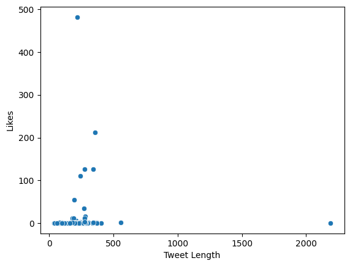

Question 6: Is there a relationship between the length of the Tweet and the number of likes?
To answer this question, we can actually use a Scatterplot to help us visualize the relationship between these two variables. So for this graph, we let the independent variable or the x-axis be the Length of the Tweet while the dependent variable or the y-axis be the Number of Likes in the tweet.
import seaborn as sns
sns.scatterplot( x="Tweet Length", y="Likes",data=df);

So based on the graph above, we can say that there is no relationship between the length of the Tweet and the number of likes. Most of the datapoints are actually just clustered in the lower left of the scatter-plot box.